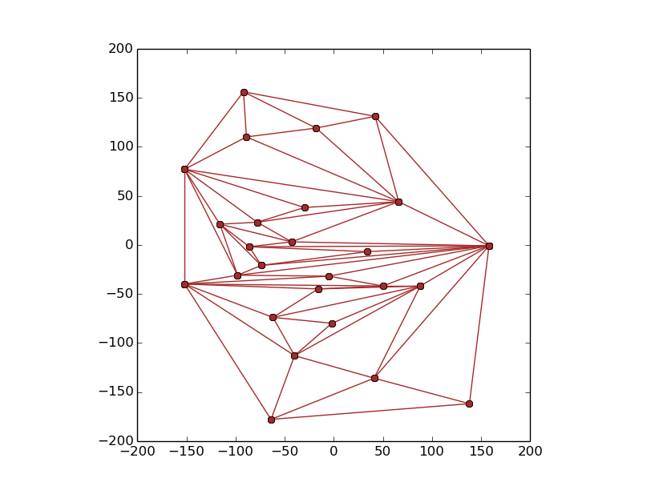
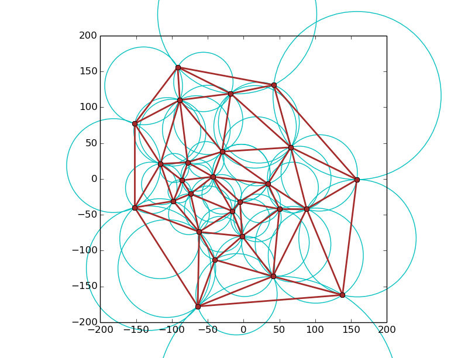
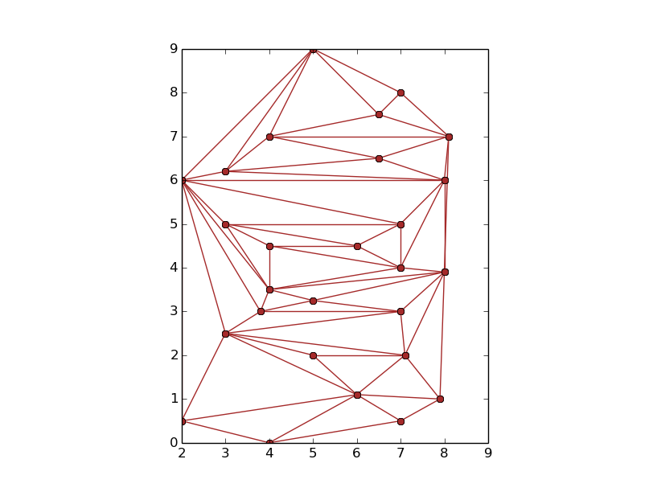
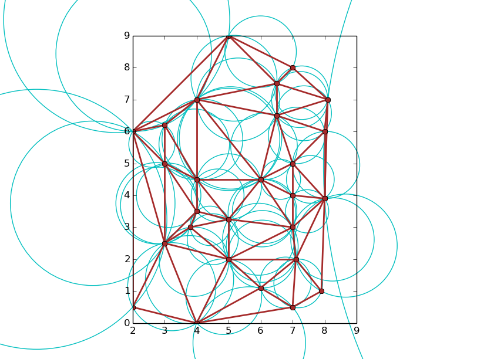
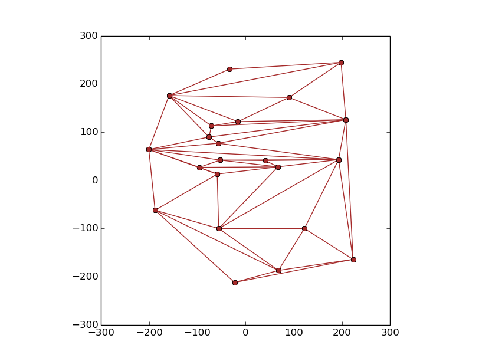
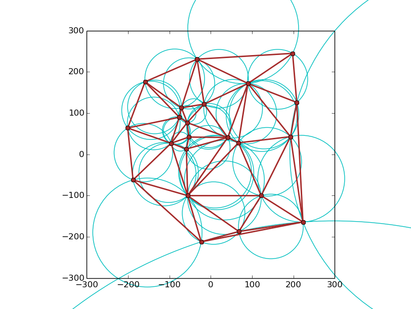

Problem Statement: Given a set S of n points in the 2D plane, we need to find the triangulation of the set S.
Triangulation of a set of points S can be done by computing the Convex Hull of S. Then we'll connect the topmost interior point to the topmost point in the Convex Hull and all other interior points in the chain from the topmost point of the Convex Hull to its bottommost point. This creates two Y-monotone polygons in DCEL. Then we triangulate each of these faces using triangulate() function.
1. Input = Set of points P in the 2D plane
2. Output = Triangulation of the points P
3. Find the Convex Hull of P using the algorithms present in ConvexHull.h
4. Store the points in a vector of Points ch
5. Store the points not in ch in a separate vector as they are interior points.
6. Sort the interior points on the basis of decreasing y-coordinate. if two points have the same y-coordinate, sort of the basis of increasing x-coordinate
7. Construct the DCEL consisting of points in the convex hull
8. Find the top-most and bottom most points of the Convex Hull
9. From the top-most button, add an edge from it to the highest interior point, from it to the next and so on.
10. After joining the bottom-most interior post to the bottom_most vertex, the polygon is divided into 2 y-monotone polygons
11. Triangulate the set of points in D using triangulate.cpp.
1. Triangulating the polygon = O(nlogn)
2. Sorting the interior points - O(nlogn)
3. Finding top and bottomo most point in DCEL - O(n)
4. Adding edges to DCEL - O(n)
5. Triangulating the polygon - O(nlogn)
Therefore total time taken is of the order of O(nlogn)
A Delaunay triangle is a triangle in the the planar subdivision such that the circumcircle of the triangle is empty i.e. it doesn't contain any other vertex of the planar subdivision.
A triangulation of a set of points is Delaunay if and only if all triangles are delaunay.
1. Construct an arbitrary triangulation T of point set S.
2. Push all non-locally interior edges of T on stack and mark them.
3. While stack is non-empty do
4. pq = pop()
5. unmark pq
6. If pq is non-locally Delaunay then
7. Replace pq by the edge connecting the respective third vertices of the two incident triangles.
8. Push other four edges of the two triangles into the stack if unmarked.
Time Complexity: O(n*logn)
Space Complexity: O(n)
$ ./test3.o <input-file>
$ python plot_poly.py out1.txt out2.txt out3.txt
$ python plot_delaunay.py out4.txt circles.txt\n





